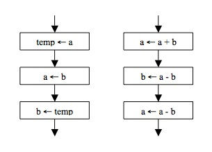
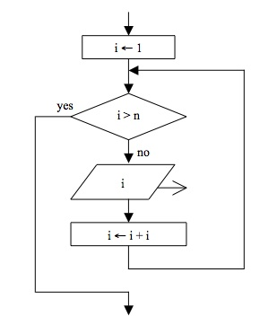
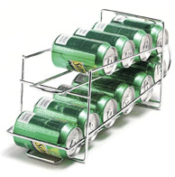

15-105 SPRING 2009 [CORTINA]
HOMEWORK 3 - due Friday, February 6
WRITTEN PROBLEMS (8 pts)
Hand these problems in on paper in class on the due date specified.
- (1 pt) Trace each of the following flowcharts using the initial values
a = 42 and b = 18. What useful computation are both of these flowcharts
performing?

-
(2 pts) Draw a complete flowchart for the algorithm below.
Trace the algorithm for n = 48. How many iterations of the loop are
computed?
1. Input a positive integer n.
2. While n ≠ 1, do the following:
a. If n is even, divide n by 2.
Otherwise, multiply n by 3 and then add 1.
b. Output n
- (2 pts)
Write out the algorithm represented by the flowchart below as a
Python program.
What is the output of the algorithm if n = 1000? Describe what this
algorithm is computing in general for any positive integer value for n.

- (1 pt) Suppose we want to store a sequence of 5 data values in a computer.
The data values are represented as A, B, C, D, E, in the order given.
-
If we use a vector to store the sequence such that the first data value of
the sequence is always stored in position 0 of the vector (see below),
which operation takes more time: removing the value A or adding a new value F
after E? Why?
0 1 2 3 4 5 6 7
-------------------------------
| A | B | C | D | E | | | |
-------------------------------
-
If we use a singly linked list to store the sequence such that the first data
value of the sequence is always stored at the head of the list (see below),
which operation takes more time: removing the value A or adding a new value F
after E? Why?
------- ------- ------- ------- --------
| A | |-->| B | |-->| C | |-->| D | |-->| E |null|
------- ------- ------- ------- --------
head
- (2 pts) Stacks and queues are two ways to store data in a linear fashion.
- Describe the major difference between a stack and a queue.
- The picture below is of a soda can dispenser. Is it a stack or a queue?
Explain.

- Using the stack algorithm for computing RPN expressions, trace the
algorithm on the RPN expression below, showing the
stack at the end of each iteration of the loop.
(Draw a separate picture of the stack
each time, so we can see the overall process of the algorithm.)
9 4 8 5 + * 1 - 3 / + $
- Using the queue algorithm for the Josephus problem, trace the algorithm
for n = 10, m = 6. Who is the last man standing?
COMPUTER PROBLEM (2 pts)
Hand this in electronically using the
Electronic Handin System by 11:59PM on the due
date indicated.
Write a short Python program on your computer named triangle.py
to implement the algorithm below:
1. Set i equal to 11.
2. Set j equal to 1.
3. While j ≤ 10, do the following:
a. Do the following j times:
i. Output i but keep the cursor on the same line.
ii. Add 1 to i.
b. Move the cursor to the next line.
c. Add 1 to j.
If you complete your program correctly, you should see the
following output:
11
12 13
14 15 16
17 18 19 20
21 22 23 24 25
26 27 28 29 30 31
32 33 34 35 36 37 38
39 40 41 42 43 44 45 46
47 48 49 50 51 52 53 54 55
56 57 58 59 60 61 62 63 64 65